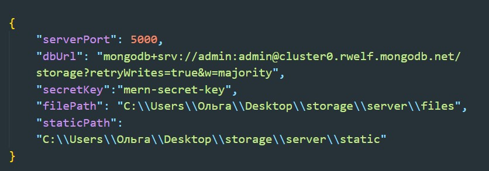
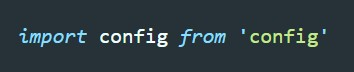
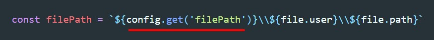

Данная библиотека позволяет удобно управлять глобальными переменными, в которых мы можем хранить ключи или пути до директории проекта.
Установка
some codeПосле установки в корне проекта создаем папку config, в которой создаем файл default.json. Этот файл должен иметь обыкновенную JSON структуру.
Привер:
Теперь что бы получить значение переменной внутри кода Node.JS мы сначала импортируем config
Затем у config вызываем метод get и туда передаем строкой название ключа в JSON дереве.
